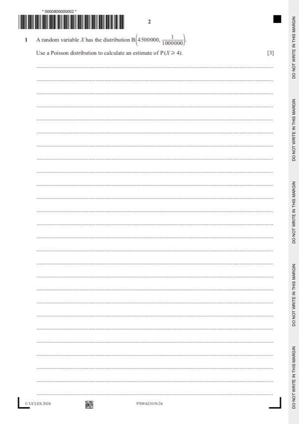
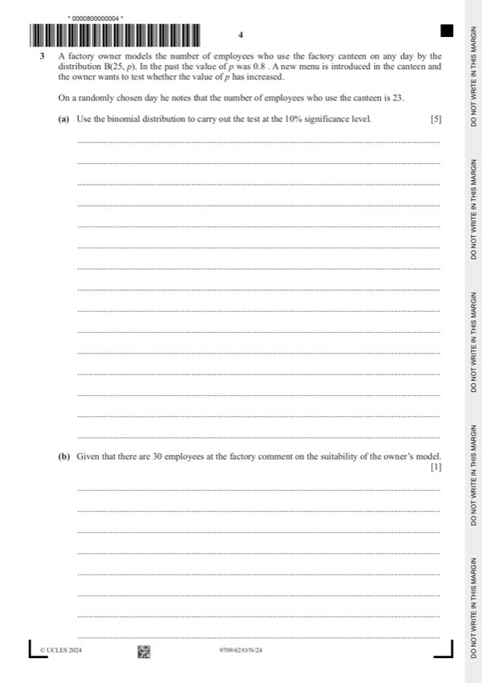
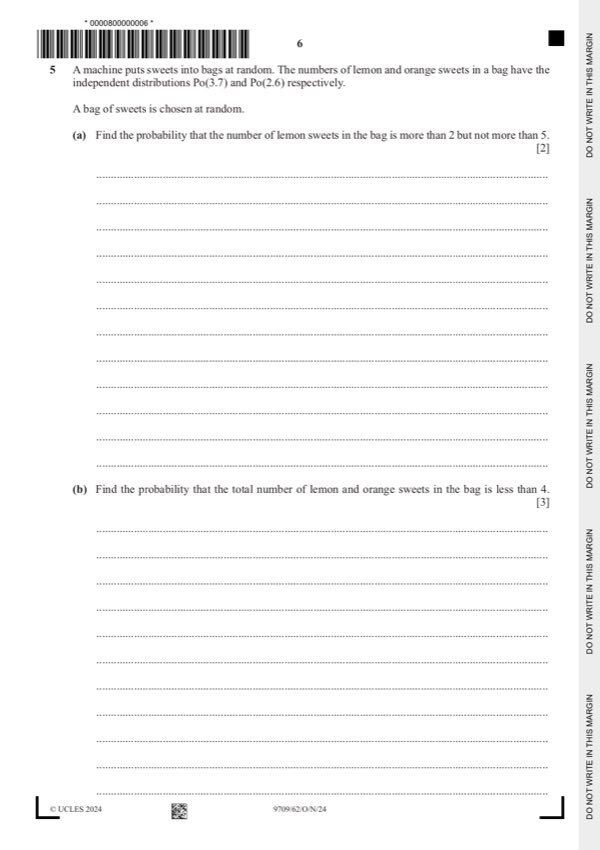
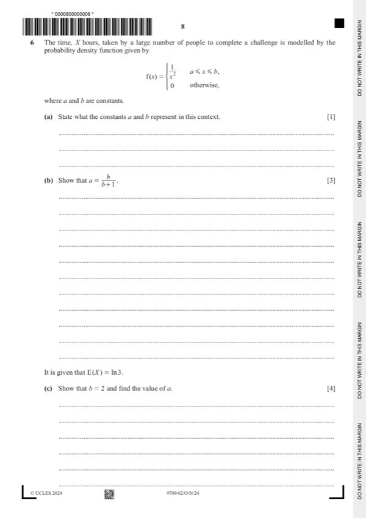
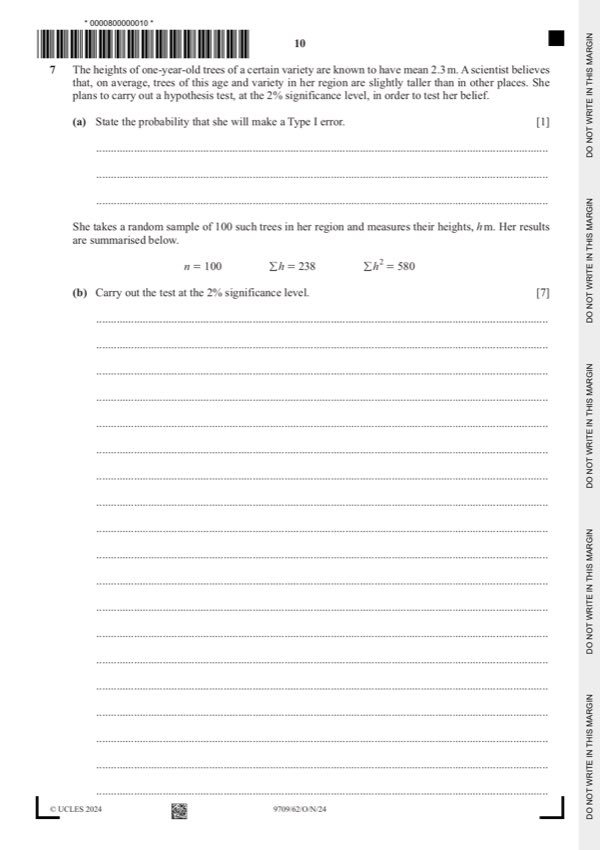

Question 0
Part 0 — solution
- [M1] Standardising with their values (wrong cc scores M1)
Mark points
- [M1] Standardising with their values (wrong cc scores M1)
Step-by-step solutions based on the mark scheme (not a mark-scheme dump).
Part 0 — solution

Part 1 — solution
Part 1 — solution
Part 1 — solution
Part 1 — solution
Part 1 — solution
Part 1 — solution
Part 1 — solution
Part 1 — solution
Answer: a · b
Part 1 — solution
Answer: b
Part 1 — solution
Part 1 — solution
Part 1 — solution
Part 1 — solution
Part 2(a) — solution
Part 2 — solution

Part 3 — solution
Part 3(a) — solution
Part 3 — solution
Part 3 — solution
Part 3 — solution
Part 4(a) — solution
Part 4 — solution

Part 5 — solution
Answer: OR
Part 5(a) — solution
Part 5(b) — solution

Part 6(a) — solution
Part 6(c) — solution
Answer: a

Part 7(a) — solution
Part 7 — solution
Part 50 — solution
Part 99 — solution
Answer: 100 · 100